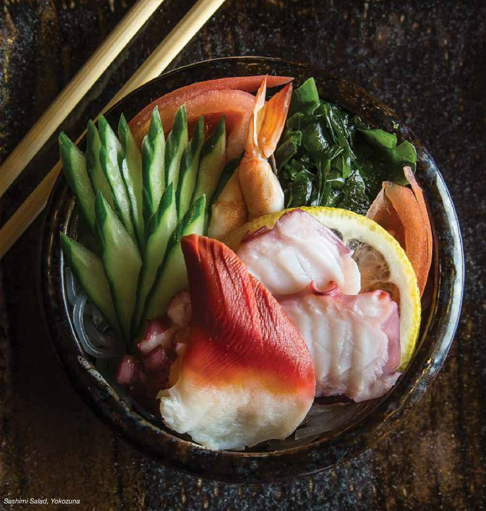
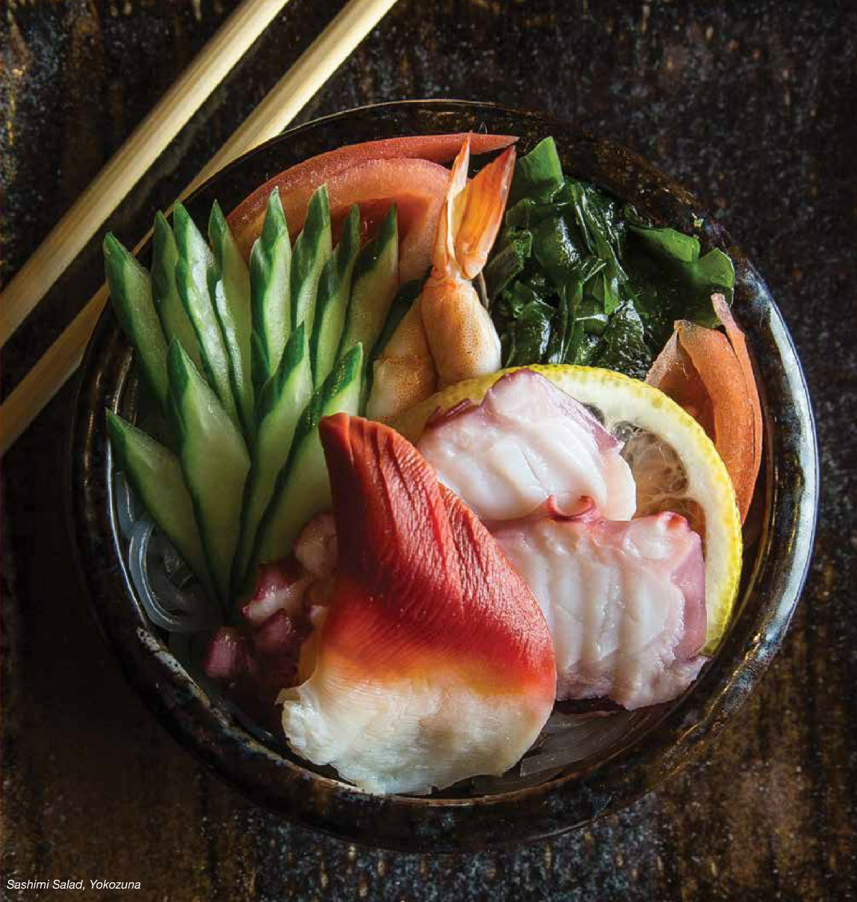

THE ART OF SUSHI
CURTIS COMEAU
Photographing in a sushi restaurant is a wonderful experience. Each dish is always colorful, well-crafted, balanced and creative. Even a minimalist dish at a sushi restaurant has an aesthetic that is pleasing to the eye.
I eat sushi at least a few times a week, so when The Tomato asked me to capture a photo essay focusing on the Art of Sushi I figured I was well-prepared to shoot this story. However, early on in this assignment I found out that, even as a regular sushi eater, I had several misconceptions about sushi in general.